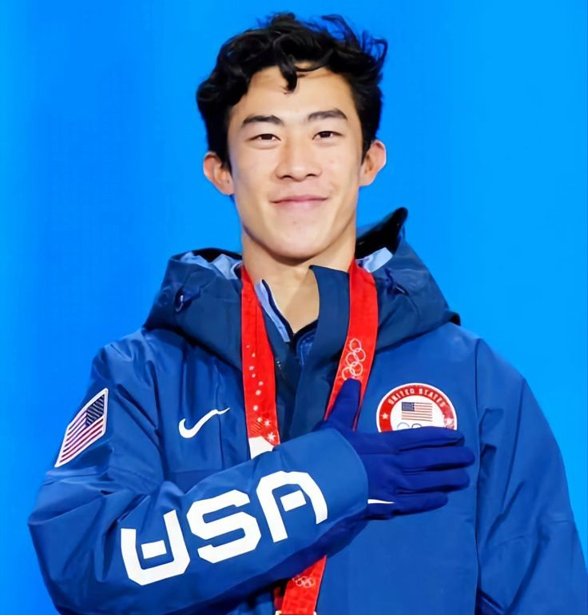
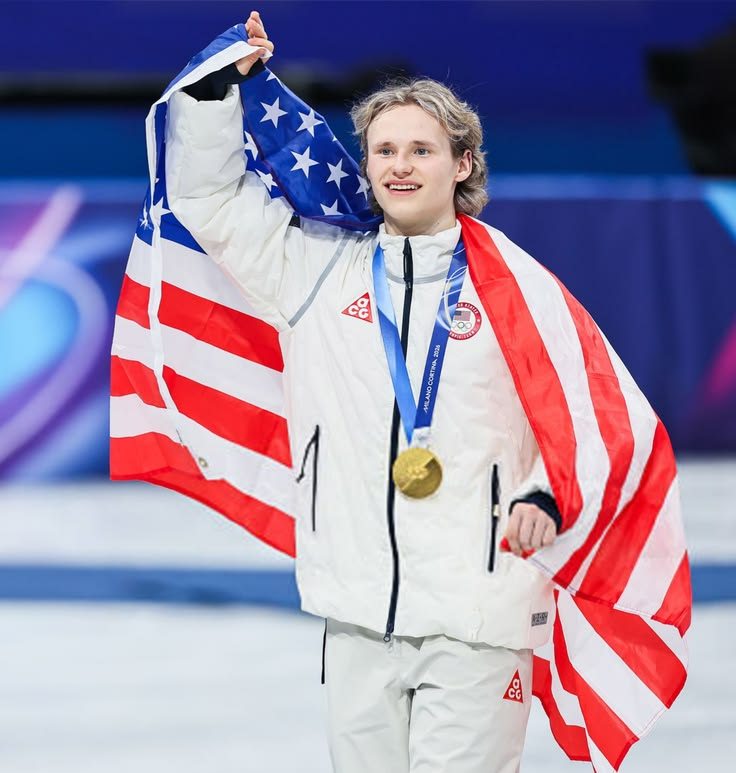
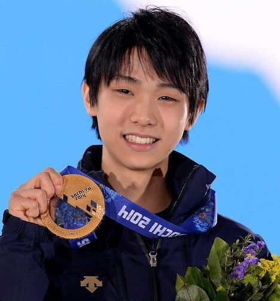

Одиночное катание (мужчины)
Наивысший балл: 335.30 (Нейтан Чен, Финал Гран-при ISU 2019/2020)
Одиночное катание (мужчины)
Наивысший балл: 335.30 (Нейтан Чен, Финал Гран-при ISU 2019/2020)

Нейтан Чен (США)
Бронзовый призёр в командном зачёте на Олимпийских играх 2018 года. Первый фигурист, выполнивший пять четверных прыжков в произвольной программе (четверной лутц, флип, сальхов и два четверных тулупа) на национальном чемпионате США и чемпионате четырёх континентов в 2017 году. Годом ранее он стал первым, кто исполнил четыре четверных прыжка в произвольной программе. В 2016 году на национальном чемпионате получил отрывной перелом, из-за которого пропустил остаток сезона. Лауреат премии ISU 2023 года в номинации «Самый ценный фигурист». Личный рекорд – 335.3 балла по сумме двух программ (Финал Гран-при ISU 2019/2020).

Илья Малинин (США)
Олимпийский чемпион в командном зачёте на Играх 2026 года. Первый фигурист, успешно выполнивший четверной аксель на соревнованиях (U.S. Figure Skating Classic 2022) и семь четверных прыжков в одной программе (финал Гран-при 2025). Тренируется у родителей, которые сами были фигуристами и представляли Узбекистан. В 2023 году получил награду ISU «За особые достижения» за четверной аксель, в 2024 году – в номинации «Самый ценный фигурист», в 2025 году – в номинациях «Самая зрелищная программа» и «Фигурист года».

Юдзуру Ханю (Япония)
Первый японский фигурист-мужчина, завоевавший олимпийское золото, и первый с 1948–1952 годов (после Дика Баттона) двукратный олимпийский чемпион подряд. Первый фигурист, чисто выполнивший четверной риттбергер на соревнованиях (Осенняя классика 2016 в Канаде) и набравший более 300 баллов (322.40 на NHK Trophy 2015). Пошёл по стопам старшей сестры и начал заниматься фигурным катанием. После разрушительного землетрясения 2011 года в Японии его дом в Сендае был поврежден, а местный каток закрылся. Некоторое время он жил в эвакуационном центре, но позже ему разрешили вернуться в дом и на каток для продолжения тренировок. Весной 2012 года переехал в Канаду для продолжения тренировок.